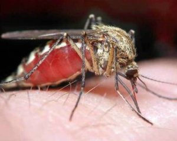

ДИРОФИЛЯРИОЗ

Город Украинка находится на правом берегу Днепра. На юге и востоке
город также окружают две речки – Козинка и Стугна. Эти факторы значительно
влияют на распространение популяции комаров, которые переносят опасное
заболевание дирофиляриоз.
Дирофиляриоз вызывается особым видом круглых червей –
дирофиляриями. Этих паразитов могут обнаружить в организме человека и
животных. Но чаще заболевание регистрируют именно у собак.
Стоит помнить, что любой комар, укусивший Вашего питомца, может
быть переносчиком болезни. Заражаются питомцы в период активности
насекомых с мая по сентябрь. Доказано, что даже в условиях городской
квартиры, животное может заразиться дирофиляриозом от «подвальных»
комаров (комары рода Cules) независимо от времени года.
Симптомы болезни могут быть разнообразными и зависят от количества
паразитов и места их локализации. При небольшом заражении, дирофиляриоз
протекает бессимптомно.
Для животных, пораженных видом дирофилярий паразитирующих под
кожей (D. repens), угрозы жизни нет. Эта форма заболевания может проявляться
единичными небольшими узелками под кожей на любом участке тела, которые
не увеличиваются и безболезненны при пальпации. При более интенсивном
поражении, наблюдается зуд в местах поражения, покраснение кожи, язвы,
выпадение шерсти.
Намного опасней для питомца сердечно-легочная форма дирофиляриоза,
вызванная дирофиляриями D. immitis. Прогноз при этом от осторожного до
неблагоприятного. При запоздалой диагностике, животное может погибнуть.
Первым симптомом может быть сухой кашель. Появляется общая
слабость, животное меньше двигается, больше отдыхает. Отмечается
хроническая одышка. Затем развивается патология печени и сердечной
системы, вследствие чего развиваются отеки, асцит (скопление жидкости в
брюшной полости).
Для диагностики дирофиляриоза в нашем ветеринарном центре
«БАГИРА» используется метод нативной капли для обнаружения
микрофилярий. Для полного исключения дирофиляриоза, проводятся
генетические исследования (ПЦР и ИФА). Рентгенография грудной клетки
также может помочь подтвердить диагноз дирофиляриоз (характерно локальное
поражение периферических легочных артерий, их увеличение, уплотнение,
деформация, особенно в каудальных долях легких).
При эхокардиографии в
просвете легочных артерий или правого предсердия могут обнаруживаться
взрослые дирофилярии, также наблюдается выраженное изолированное
расширение правых отделов сердца и гипертензия полых вен, тромбы в
легочной артерии и правом предсердии.
Лечение дирофиляриоза комплексное и поэтапное и зависит от степени
инвазии, объема поражения сердца и легких. В основу принципов лечения
входит улучшение общего состояния животного, избавления питомца от всех
стадий развития дирофилярий, профилактика образования или уменьшение
тромбоэмболических осложнений.
Для профилактики этого страшного заболевания, ветеринарные врачи
рекомендуют обрабатывать питомца специальными репеллентами (Стронхолд,
Адвокат, Мильбемакс и т. п.) ежемесячно.